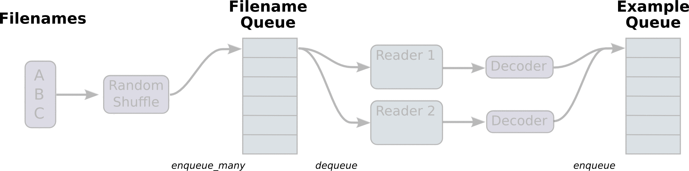

3.1 文件读取流程
学习目标
- 目标
- 说明TensorFlow文件读取的流程
- 应用
- 无
- 内容预览
- 3.1.1 文件读取流程
- 1 第一阶段
- 2 第二阶段
- 1）读取文件内容
- 2）内容解码
- 3 第三阶段
- 3.1.2 线程操作
- 3.1.1 文件读取流程
有三种获取数据到TensorFlow程序的方法：
- QueueRunner：基于队列的输入管道从TensorFlow图形开头的文件中读取数据。
- Feeding：运行每一步时，Python代码提供数据。
- 预加载数据：TensorFlow图中的张量包含所有数据（对于小数据集）。
3.1.1 文件读取流程

- 第一阶段 构造文件名队列
- 第二阶段 读取与解码
第三阶段 批处理
注：这些操作需要启动运行这些队列操作的线程，以便我们在进行文件读取的过程中能够顺利进行入队出队操作。
1 构造文件名队列
将需要读取的文件的文件名放入文件名队列。
- tf.train.string_input_producer(string_tensor,shuffle=True)
- string_tensor：含有文件名+路径的1阶张量
- num_epochs:过几遍数据，默认无限过数据
- return 文件队列
2 读取与解码
从队列当中读取文件内容，并进行解码操作。
1）读取文件内容
阅读器默认每次只读取一个样本
具体说来：
文本文件默认一次读取一行 图片文件默认一次读取一张图片 二进制文件一次读取指定字节数(最好是一个样本的字节数) TFRecords默认一次读取一个example
- tf.TextLineReader:
- 阅读文本文件逗号分隔值（CSV）格式，默认按行读取
- return：读取器实例
- tf.WholeFileReader：用于读取图片文件
- return：读取器实例
- tf.FixedLengthRecordReader(record_bytes)：二进制文件
- 要读取每个记录是固定数量字节的二进制文件
- record_bytes：整型，指定每次读取(一个样本)的字节数
- return：读取器实例
- tf.TFRecordReader：读取TFRecords文件
- return：读取器实例
1 它们有共同的读取方法：read(file_queue)，并且都会返回一个Tensors元组（key文件名字，value默认的内容(一个样本)）
2 由于默认只会读取一个样本，所以如果想要进行批处理，需要使用tf.train.batch或tf.train.shuffle_batch进行批处理操作，便于之后指定每批次多个样本的训练。
2）内容解码
读取不同类型的文件，也应该对读取到的不同类型的内容进行相对应的解码操作，解码成统一的Tensor格式
- tf.decode_csv：解码文本文件内容
- tf.image.decode_jpeg(contents)
- 将JPEG编码的图像解码为uint8张量
- return:uint8张量，3-D形状[height, width, channels]
- tf.image.decode_png(contents)
- 将PNG编码的图像解码为uint8张量
- return:张量类型，3-D形状[height, width, channels]
- tf.decode_raw：解码二进制文件内容
- 与tf.FixedLengthRecordReader搭配使用，二进制读取为uint8类型
解码阶段，默认所有的内容都解码成tf.uint8类型，如果之后需要转换成指定类型则可使用tf.cast()进行相应转换。
3 批处理
解码之后，可以直接获取默认的一个样本内容了，但如果想要获取多个样本，需要加入到新的队列进行批处理。
- tf.train.batch(tensors, batch_size, num_threads = 1, capacity = 32, name=None)
- 读取指定大小（个数）的张量
- tensors：可以是包含张量的列表, 批处理的内容放到列表当中
- batch_size:从队列中读取的批处理大小
- num_threads：进入队列的线程数
- capacity：整数，队列中元素的最大数量
- return:tensors
- tf.train.shuffle_batch
3.1.2 线程操作
以上用到的队列都是tf.train.QueueRunner对象。
每个QueueRunner都负责一个阶段，tf.train.start_queue_runners 函数会要求图中的每个QueueRunner启动它的运行队列操作的线程。（这些操作需要在会话中开启）
- tf.train.start_queue_runners(sess=None, coord=None)
- 收集图中所有的队列线程，默认同时启动线程
- sess：所在的会话
- coord：线程协调器
- return：返回所有线程
- tf.train.Coordinator()
- 线程协调员，对线程进行管理和协调
- request_stop()：请求停止
- should_stop()：询问是否结束
- join(threads=None, stop_grace_period_secs=120)：回收线程
- return：线程协调员实例
3.1.3 总结
- 文件读取流程的相关API